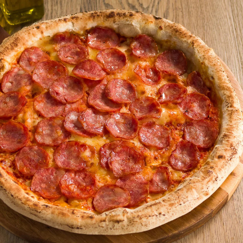
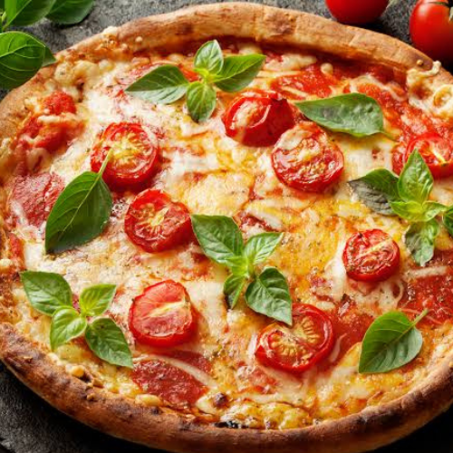
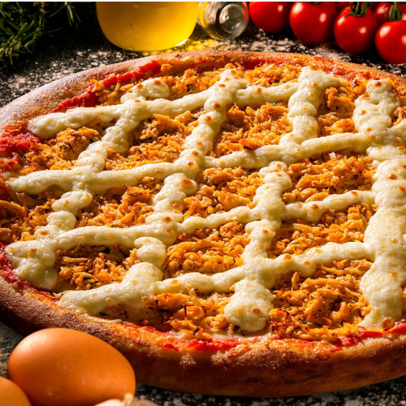

Calabresa
Linguiça calabresa fatiada, rodelas de cebola, azeitonas pretas e orégano.
Fazer PedidoMassa de longa fermentação assada no forno a lenha tradicional.


Linguiça calabresa fatiada, rodelas de cebola, azeitonas pretas e orégano.
Fazer Pedido
Queijo mussarela, rodelas de tomate fresco e folhas de manjericão.
Fazer Pedido
Frango desfiado temperado, cobertura de queijo tipo catupiry e milho.
Fazer PedidoChocolate ao leite derretido coberto com chocolate granulado.
Queijo mussarela com fatias de goiabada derretida.
Fatias de banana assadas, polvilhadas com açúcar, canela e um fio de leite condensado.
R. Abrão Júlio Rahe, 325 - Centro, Campo Grande - MS, 79010-010